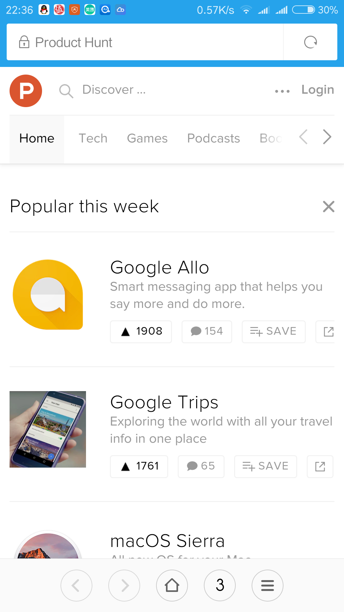
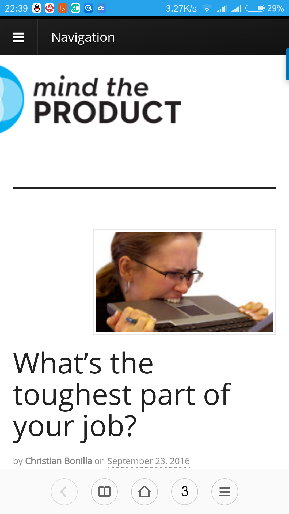

posted 2016-09-10
推荐四个国外产品经理常看的网站
本文来自知乎问题“产品经理经常上的国外网站有哪些？”的答案：https://www.zhihu.com/question/19829726/answer/120955901
在quora看到这样一个问题， Which is the best website that a junior product manager should visit daily?（初级产品经理每天必看的网站有哪些？）
简单整理并汇总如下：
Product Hunt 
Mind The Product 